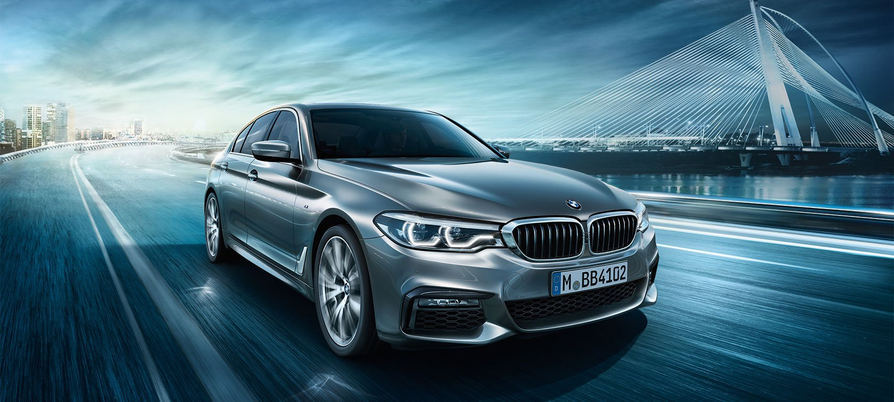
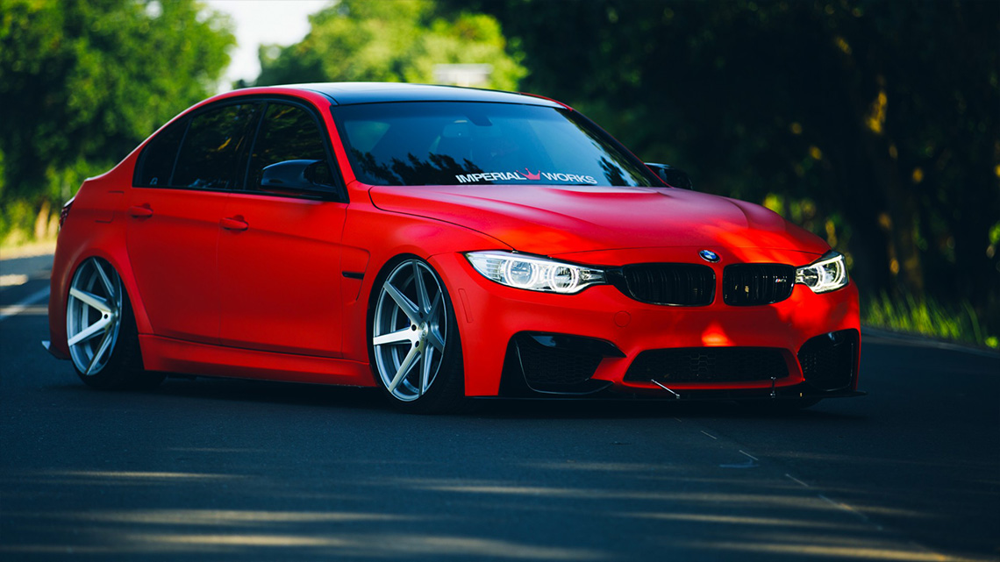
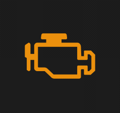
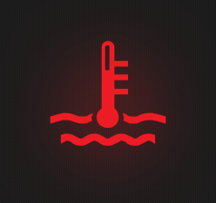
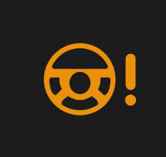
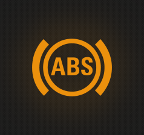
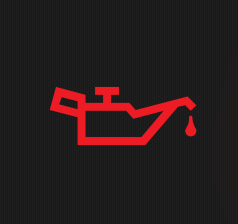

.jpg)
СЕРВИС И РЕМОНТ BMW
г. Минск
(+37529)563 О9 19 (VIBER TELEGRAM)
BMW - стремление к совершенству!
Записаться !
Доверие-
это наша цель!
Для тех кто ценит свой автомобиль
BMW - автомобиль,созданный для только для Вас!
Позвонить
BMW -источник Вашего адреналина
Только профессионалы способны понять характер БМВ!
Вам достаточно один раз побывать у нас,чтобы убедиться в том,что Вы не ошиблись!
Я еду к Вам!
Качество -залог успеха
M3 M5 ДЛЯ ВАС ЭТО ТОЖЕ НЕ ПРОСТО ЦИФРЫ?
Вы хотите BMW? У Вас прекрасный вкус! !
Оставить заявкуУслуги СТО
Ремонт или замена ДВС любой сложности,ремонт ABS,ASC,DSC,ремонт блока радиомодуля BM24,BM54, техническое обслуживание автомобилей BMW,ремонт webasta (вебаста) диагностика и ремонт тормозной системы,системы охлаждения и отопления, компьютерная диагностика,кодирование и програмирование всех ЭБУ,ремонт и диагностика АКПП, ремонт ходовой автомобиля,системы AIRBAG и LOGIC7,РЕМОНТ МОТОРА N52,замена корректоров фар е39,привязка блоков,восстановление стеклоочистителя BMW Х5 Е70, ремонт раздатки, Минск.

ДВИГАТЕЛЬ И АКПП
Мы осуществляем ремонт и обслуживание любых двигателей BMW:компьютерная диагностика:считывание и расшифровка ошибок,чтение фактических параметров,проверка компрессии,замер давления масла,проверка наддува и противодавления,плавность хода;поиск и устранение проблем с газораспределением:троит двигатель,плохая динамика разгона,большой расход топлива,жор масла-все это может быть результатом проблем с сердцем Вашего баварца;замена масла,топливного,воздушного и салонного фильтра и других технических жидкостей;диагностика и ремонт АКПП,приводных валов,состояния шрусов и карданных соединений. МЫ ОСУЩЕСТВЛЯЕМ АБСОЛЮТНО ЛЮБОЙ РЕМОНТ!
КОДИРОВАНИЕ\ПРОГРАМИРОВАНИЕ
Ваш автомобиль на заводе БМВ оснащен очень большим количеством дополнительных функций, которые скрыты производителем, но легко дооснащаются. Вы будете приятно удивлены тем, что еще может Ваш БМВ. Очень большое количество ошибок в F-серии устраняется именно кодировкой. Слетел блок света? Не работает мультимедиа? Мы восстановим! А так же: привязка новых ЭБУ, кодирование и дооснащение дополнительными опциями,привязка ЭБУ после ремонта, евро 2 бмв, кодируем блок света бмв (фары, поворотники), смена прошивки двигателя, обновление прошивки до самой современной, прошивка без катализатора, прошивка без лямбда зондов и многое другое. И все это на АБСОЛЮТНО ЛЮБЫЕ МОДЕЛИ. Не обязательно подвергать авто ремонту, иногда достаточно просто КОМПЬЮТЕРНОЙ ДИАГНОСТИКИ!

ОТОПЛЕНИЕ\ОХЛАЖДЕНИЕ
Автомобили BMW позволяют владельцам в комфортных условиях преодолевать как малые,так и длительные поездки!Ремонт системы охлаждения мы рекомендуем выполнять всегда своевременно,чтобы избежать неприятных ситуаций в дороге.Мы предлагаем следующие услуги: замена термостата бмв, замена помпы бмв, починим ветилятор печки в вашем бмв, найдем и устраним течь антифриза, заменим вентилятор кондиционера, ремонт\замена радиатора, радиатора печки, замена вискомуфты бмв, чистка радиаторов бмв. Если Вы хотите продлить срок службы автомобиля, не забывайте периодически уделять внимание кассете радиаторов. Со временем между ними собирается очень большое количество пыли и грязи, что приводит к перегреву двигателя, а это уже дорогостоящий ремонт. Не работает вентилятор салона? Аккумулятор постоянно разряжается в Вашем БМВ? Мы поможем Вам! Приезжайте!

ПОДВЕСКА И РУЛЕВОЕ УПРАВЛЕНИЕ
Ходовая система БМВ безупречна!Рулевое управление информативно,автомобиль всегда четко отзывается на Ваши пожелания! Если же Ваш BMW стал другим-пора делать диагностику подвески! Стучит подвеска? Автомобиль не держит дорогу? В колее Вы постоянно ловите авто? Это лишь небольшой перечень симптомов,при которых уже нужно записываться на диагностику и ремонт подвески. Наши услуги: замена рычагов, перепресовка сайлентблоков, сайлентблоки н-образных рычагов, снятие установка рулевой рейки, замена рулевых наконечников в сборе или отдельно замена тяги, замена рулевого карданчика, замена шрусов, восстановление или замена кардана, подвесного подшипника, крестовины кардана, замена полуоси, замена сайлентблоков редуктора, перепресовка сайлентблоков подрамника. Если Вы обладатель полноприводной F-серии - обязательно следите за пыльниками шрусов, ведь их несвоевременная замена приводит к выходу из строя всей полуоси.

ТОРМОЗНАЯ СИСТЕМА БМВ
БМВ славится своей великолепной тормозной системой. Мы предлагаем Вам замену тормозных дисков и колодок, замена тормозной жидкости, установка ремкомплекта суппортов,замена тормозных трубок и шлангов, замена главного тормозного цилиндра и вакуумного усилителя тормозов, ремонт ручного тормоза (ручника) , ABS,ASC,DSC, прокачка тормозной системы. Не знаете какой датчик абс не работает? Постоянно горит лампочка abs и asс? Устали постоянно менять блок абс бмв? Потратили уйму денег, а результата нет? Мы Вам поможем!

ДВС N52!!!
"Троит двигатель,работает зачастую в аварийном режиме,постоянные ошибки по системе VANOS,мотор колотит,жрет масло,не едет..."-ЭТО НАИБОЛЕЕ ЧАСТЫЕ ФРАЗЫ ВЛАДЕЛЬЦЕВ BMW C МОТОРОМ N52!У НАС ЕСТЬ ОТЛИНАЯ НОВОСТЬ-МЫ УМЕЕМ РЕШАТЬ ЭТИ ПРОБЛЕМЫ И ДАЖЕ СПЕЦИАЛИЗИРУЕМСЯ НА ЭТИХ МОТОРАХ!Пусть завод BMW немного не доработал этот мотор,наш сервис поможет Вам наслаждаться полностью исправным авто и долгое время не нуждаться в его ремонте и колесить в окрестностях Минска в поисках того, кто сможет вам помочь!. Двигатель N52 не такок плох, как о нем говорят, просто он требует очень тщательного ухода и своевременного ремонта. На сегодняшний день мы имеем 100%-ый результат по всем обращениям,связанным с нареканиями по этому мотору.
ВНИМАНИЕ АКЦИЯ!!!!Бесплатная диагностика подвески при условии последующего ремонта!Скидка на детали в апреле-мае составит 8%. Спешите записаться!.
"Нужно менять масло в коробке или не стоит?" Как часто вы слышите подобную фразу? Многие владельцы БМВ уверены,что при отсутствии проблем с АКПП нет необходимости в замене масла. Это мнение в корне неверно. МЕНЯТЬ МАСЛО В КОРОБКЕ НУЖНО! И не просто менять масло,а сделать полное ТО АКПП. bmw-service предлагает услугу обслуживания АКПП на 100%,которая включает в себя следующее: замена масла,замена поддон-фильтра, замена "очков", замена втулок коробки, установка новой розетки, чистка и мойка гидроблока и его проверка, проверка всех солненоидов на дилерском оборудовании. Именно такое обслуживание автоматической коробки передач проблит срок ее службы как минимум на 30% и избавит вас от дорогостоящего ремонта в будущем. Ждем Вас на обслуживание коробки!
ХОЧУ ПОЗВОНИТЬ ВАМВнимание!Специализированный сервис!
Практически все владельцы BMW с двигателями N63 и N62 столкнулись с такими характерными проблемами как жор масла, неравномерная работа мотора, постоянные провалы в тяге, отсутствие приемистости авто, дребежжание турбин, подергивание авто при разгоне, плохой запуск двигателя, постоянные течи масла и антифриза, высоких расход топлива и т.д Уверены, Вам знакомы более половины перечисленных проблем. Именно поэтому мы вынесли N63 в отдельную категорию и уделили ему наибольшее внимание. Спешим Вас порадовать,мы знаем как помочь Вам долго и без проблем наслаждаться динамикой данного агрегата. Вы будете не просто удивлены тому, как может ехать BMW,но и тому,насколько он надежен. Мы предалагаем услугу капитального ремонта двигателя N63 и N62 "под ключ",что включает в себя полный ремонт двс от "а" до "я". Система полного привода так же способна доставить Вам неприятности. Если Ваш автомобиль при ускорении набирает скорость рывками,машина дергается, постоянно выходят из строя полуоси и слышен скрежет в районе кузова автомобиля-это симптомы необходимого ремонта системы X-DRIVE. Затягивание ремонта приведет к частой замене полуосей и постоянному выходу из строя приводных валов и скорее всего невозможности восстановления самого узла в принципе
F-серии X-DRIVE
РЕМОНТ РАЗДАТКИ F-series и как его избежать?!Практически все владельцы БМВ F-series с полным приводом столкнулись с проблемой частого выхода из строя передних полуосей, заменой пыльников шруса, установкой новых приводных валов. Мы знаем как помочь Вам избежать данных проблем,не прибегая к частой замене дорогостоящх узлов полного привода. После нашей сервисной программы вы забудете о порванных пыльниках, хрусте в пооротах, дергании на разгоне, закусывании руля и т.п.
УбедитьсяЗАМЕНА САЙЛЕНТБЛОКОВ ЗАДНЕГО РЕДУКТОРА
99% новых БМВ имеют повреждения сайлентблоков заднего редуктора. Если Вам знакомы такие симптомы как вибрация при разгоне, дергание на скорости, колейность, неустойчивость на дороге - это первые симптомы данной проблемы. Мы рады предложить услугу по замене сайлентблоков заднего редуктора для BMW F Series. Установка новых сайлентблоков избавит автомобиль от данной проблемы на долгие годы.
УбедитьсяЗАМЕНА ЦЕПЕЙ F-series
Высокая мощность современных двигателей привела к тому, что ресурс ГРМ стал значительно меньше. Двигатели N57 N47 N57N N63 особенно подвержены растягванию цепи. Последствия растянутой цепи,увы,печальны и их устранение в разы превышает стоимость операции замены цепей. В наш комплекс по замене цепей входят абсолютно бесплатная замена всех сопутствующих сальников,прокладки поддона, прокладки клапанной крышки,задних и передних крышек. В конце процедуры вы получаете абсолютно чистый и сухой двигатель, избавляетесь от частых ремонтов по устранению течи прокладок масляного стакана, течи масла впуска и т.п. Нас знает большинство владельцев БМВ не только в Минске!
УбедитьсяЗамена цепей двигателей N серии.Все не так страшно,как Вам рассказывали!
Наверное, абсолютно любой владелец БМВ с двигателем N серии уже подошел к вопросу о замене цепи. Многие относятся к данной процедуре абсолютно спокойно,ведь это "штатная" операция, а вот кто-то избегает ее и даже готов сменить авто,лишь бы с этим не сталкиваться.Спешим Вас успокоить-замена цепи двигателя -стандартная операция,которую можно просто назвать "Большое ТО" и не стоит ее бояться. Да,она достаточно трудоемка и требует высококвалифицированного специалиста,но не более того.В данном вопросе,мы имеем свой алгоритм,ключевой критерий которого-ЗАМЕНА ЦЕПЕЙ В ДИЗЕЛЬНЫХ ДВС ТОЛЬКО СО СНЯТИЕМ ДВИГАТЕЛЯ. Многие спросят:Зачем усложнять и без того не простую операцию?Ответ прост: при снятом двигателе происходит замена АБСОЛЮТНО ВСЕХ ПРОКЛАДОК,САЛЬНИКОВ И УПЛОТНИТЕЛЬНЫХ КОЛЕЦ,а именно прокладка клапанной крышки,поддона,передний и задний сальник,прокладки масляного стакана,теплообменника.В двигатель не попадает абсолютно никакой грязи или мусора,в отличии от замены цепей в вывешенном состоянии. Все детали подвергаются мойке и чистке,меняются при необходимости подушки двс, впускной коллектор снова получает свою 100% пропускаемость. После такой процедуры вы АБСОЛЮТНО уверены в том,что двигатель вашего автомобиля не будет страдать постоянной течью масла,антифриза и он не будет беспокоить Вас надоедливой вибрацией в салоне и доставлять дискомфорт в вождении. Именно такая замена цепей-есть правильное решение.Если у Вас остались вопросы-позвоните нам и мы подробно расскажем почему именно у нас стоит выполнять "Большое ТО"!
Чистка впуска и ГБЦ скорлупой ореха!
Новые модели BMW F-series оснащены высокофорсированными двигателями, способными удовлетворить пожелания даже самых требовательных автовладельцев, подарить массу адреналина и еще больше удовольствия от вождения автомобиля. Но при всем при этом новые авто требуют более тщательного ухода и качественного сервиса. Двигатели N63,N55,N47,N57 и т.д без должного обслуживания и профессионального ухода не порадуют Вас высоким моторесурсом, а то и вовсе огорчат своей капризностью и постоянными поломками "Долго заводится.Постоянная ошибка ограничение мощности двигателя. Ограничение наддува. Ошибка по смесеобразованию."-Вам это знакомо!? Мы знаем как помочь Вам избежать этих проблем.Мы предлагаем Вам уникальную услугу ЧИСТКА ВПУСКА ОРЕХОВОЙ КРОШКОЙ. Практически все дизельные двигатели N серии подвержены образованию нагара во впускных колодцах,коллекторе и впускных клапанах. Чистка с полным разбором ГБЦ достаточно дорогостоящая, а вот обработка клапанов и впуска скорлупой не дорогая и эффект от нее 100%. Вы снова получите ровно работающий двигатель, полностью пропадут провалы в тяге, уменьшится расход топлива. Ждем Вас на чистку впуска!

Двигатель N52
Двигатель бмв n52- один из самых проблематичных на сегодняшний день!Если ваш мотор n52 доставляет неудобстава-мы сможем это исправить! Вам нужно всего лишь записаться к нам на диагностику своего автомобиля и Вы получите полную информацию о необходимых работах, деталях и их стоимости!

Замена прошивки БМВ
Прошивка блоков бмв, прошивка евро 2 бмв,прошивка двигателя бмв - смена этого програмного обеспечения порой своеобразный тюнинг бмв. Мы предлагаем услуги по замене прошивки двигателя бмв, обновление прошивки до самой современной, установка прошивки евро 2. Вырезали катализаторы и теперь автомобиль постоянно ругается на лямбда зонд? Мы установим безкатовую прошивку и "чек" больше не будет Вас беспокоить.

Копьютерная диагностика БМВ
Компьютерная диагностика бмв помогает выявить 90% неисправностей автомобиля!Вы сможете узнать все показатели работы двигателя в реальном времени: давление наддува, компрессия, плавность хода, потребляемое количество топлива, заданное и фактическое значение потока воздуха и многое другое!

AIRBAG, LOGIC7, VANOS
VANOS (Ванос бмв) очень важный узел Вашего автомобиля!Мы осуществляем восстановление системы ванос,у нас вы сможете приобрести и установить ремкомплект ванос на любой двигатель бмв.LOGIC 7 (лоджик 7)- мы восстановим вашу систему без больших финансовых вливаний! airbags - ваша безопасность!

ABS, ASC, DSC,
Горит лампочка abs! Неисправен датчик abs! Как узнать какой датчик абс не реботает? Как проверить датчик? - это лишь несколько наиболее частых вопросов! abs, asc бмв и dsc - все это мы с легкостью настроим вам до идеального состояния!

Удаление вихревых заслонок, клапан егр и чип тюнинг бмв
Мотор м57 - один из лучших двигателей в мире! Он прекрасен в эксплуатации и идеален для чип тюнинга. Мы предлагаем услугу механического и програмного удаления егр, вихревых заслонок и чип тюнинг двигателя.

Замена маслосъемных колпачков
Замена маслосъемных колпачков в двигателях M и N серии, ремонт системы Vanos, устранение повышенного расхода масла в любых бензиновых двигателях, замена масла, замена помпы, замена прокладки клапанной крышки,прокладка масляного стакана - на эти работы у нас хорошие скидки!Приезжайте!Мы находимся в Минске!

CBS сброс, корректировка сервисного интервала
Не многие СТО знают,что в БМВ не достаточно просто заменить масло, заменить диски или колодки, об этом еще нужно сообщить Вашему автомобилю! Многие по незнанию подвергают автомобиль ненужному сервису в том случае,когда достаточно просто выполнить CBS сброс или корректировку.

WEBASTA BMW
Вебаста BMW - очень важный узел Вашего автомобиля. Именно он избавляет двигатель от проблем холодного запуска. На многих авто установка вебасто предусмотрена заводом, некоторые оснащены собственноручно!Мы ремонтируем любые варианты исполнения!)

Кодирование и програмирование дополнительных функций
Кодирование бмв - уникальная услуга, позволяющая Вам оснастить свой авто дополнительными функциями, настроить его "под себя", прошивка бмв - набор программ, именно ее меняют, когда производят тюнинг бмв.

Подвеска бмв, замена плавающих сайлентблоков
Рычаги подвески бмв, амортизаторы, сайлентблоки - гарант Вашего комфорта в движении, плавности и удовольствия от вождения вашего BMW! Мы подберем и установим для Вас только лучшие запчасти, проконсультируем в выборе аналогов и закажем нужную Вам деталь подвески.
Стоимость -базовых услуг, BYN
Мы стараемся приятно удивить наших клиентов стоимостью оказываемых услуг,чтобы вы могли принятьь правильное решение в выборе СТО BMW. Мы уверены,что это еще один весомый аргумент в выборе именно нас. Мы занимаемся только профессиональным и качественным ремонтом БМВ! Стоимость любой услуги по ремонту вашего БМВ вы можете уточнить у нас по телефону. Мы окажем вам качественную консультацию перед ремонтом, поможем с выбором деталей и проконсультируем в целесообразности того или иного сервиса автомобиля. Внимание! Сервис не несет ответственности за работоспособность "дешевых китайских" аналогов запчастей. Учитывайте это, приобретая сомнительные детали.
Замена масла ДВС
Ремонт подвески
Компьютерная диагностика
Полная диагностика перед покупкой
МЫ В СОЦИАЛЬНОЙ СЕТИ
Запишитесь на обслуживание BMW сегодня
Внимание! Мы находимся в Минске!